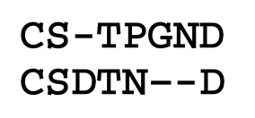
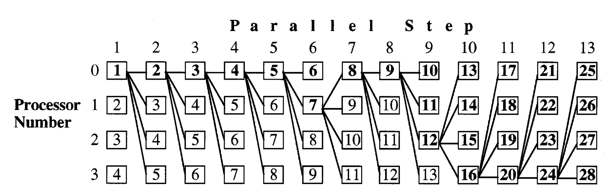

We plan to implement a speculative-parallel version of the Berger-Munson algorithm for multiple sequence alignment, which has important implications for computational biology. We will then benchmark our algorithm for performance on several types of hardware.
Sequence alignment is an important problem for computational biology. Given two biological sequences (usually amino acid or nucleic acid sequences), we wish to identify similarities (e.g. identical subsequences) to analyze their biological similarity. One approach is to use alignment, inserting gaps into both sequences at certain points. We then wish to find the best alignment, using some scoring criteria.
In the above image, each letter represents an amino acid. Image taken from Yap, Frieder, and Martino (1998).
We are also interested in multiple sequence alignments, where we align more than two sequences. Aligning multiple sequences is much more difficult, since the computation time quickly increases with each sequence added. So, heuristics are used in practice.
One way to align multiple sequences is to use a randomized, iterative approach. We initialize some alignment, and iteratively try to improve the current alignment, using some randomization at each timestep. In particular, we focus on the Berger-Munson algorithm, which achieves good alignment scores, but has a bad runtime.
Although Berger-Munson has some inherent sequential steps, we attempt to parallelize the execution using speculative computation.
This problem is challenging because Berger-Munson is inherently sequential, with each timestep depending on the previous timestep’s results.
To get around this, we plan to use speculative computation. In each iteration of Berger-Munson, the new alignment is either accepted (score is better than current maximum) or rejected (score is worse than current maximum). The key observation is that each timestep only depends on the alignment of the most recently accepted iteration. Any rejected iterations are discarded.
Therefore, we can speculate, using our additional processors, the result after a chain of rejections. P0 does no speculation. P1 speculates that P0 will reject. P2 speculates that P0 and P1 will reject, and so on. Each processor uses the result from the previous timestep to compute the next alignment. For instance, if P0 and P1 both reject, we can directly use P2’s result for the next timestep.
In the above illustration from Yap, Frieder, and Martino (1998), we have a total of 28 iterations of Berger-Munson, which have been completed in 13 parallel timesteps (using 4 processors). Bolded numbers represent iterations that have been used in the final sequence of iterations. In parallel step 6, we see that P0’s result rejects, so we immediately use P1’s result for the next timestep. Similarly, in parallel step 9, we see that P0 and P1 both reject, so we immediately use P2’s result for the next timestep.
An additional challenge in mapping the workload to processors is that if we have a long chain of accepts, we will have low utilization, since many parallel results will be discarded (unbolded numbers in the above image). Thankfully, we expect many rejections as the alignment score improves.
Our main reference is Yap, Frieder, and Martino (1998). Parallel Computation in Biological Sequence Analysis. Especially we are focusing on section 4, where we describe multiple sequence alignment based on parallel speculative algorithms.
Some github code that I found: link 1, link 2.
We want to first implement a sequential version of Berger-Munson algorithm. And apply that to large sequence dataset to see the baselines. Then, we plan to implement a parallel speculative algorithm that is discussed in the paper. (PLAN TO ACHIEVE)
After this, we would try to minimize the calculation cost, maybe changing the ordering or preprocessing/prefetching the data. Also we plan to add different type of alignment/datasets to generate concrete datasets, or add different alignment algorithm(HOPE TO ACHIEVE)
We plan to use GHC machine / PSC machines. We may also experiment with GPUs, if time allows. Original paper was using Intel iPSC/860, which is using 128 cores. To implement our parallelism, we could use either a fork-join model (OpenMP), or a message-passing model (OpenMPI). This algorithm may be better implemented with fork-join.